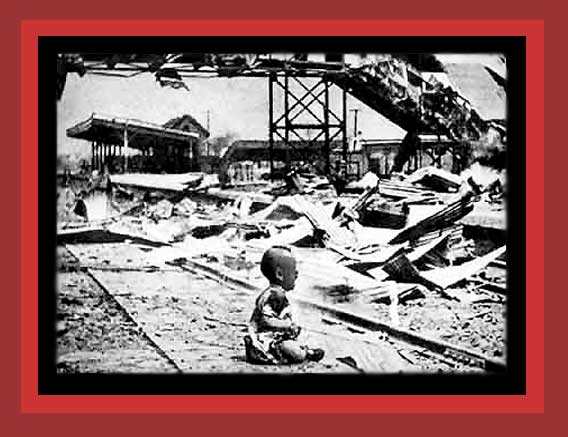

|
The Japanese showed no compunction about indiscriminately bombing civilian urban areas, which in 1938 to 1939 was condemned and protested by the United States and Great Britain as barbaric and illegal, although they did the same thing when they became involved in World War II. Here is shown the result of one such bombing by the Japanese, an abandoned Chinese baby who probably soon died after this photo was taken (see note below). China's Bloody Century, Death By Government and Statistics of Democide. Source: "Nanking organization": WWW Memorial to Commemorate the Victims of the Rape of Nanking.
NOTE: There is a possibility this may have been staged by the photographer. An email claims that the baby in the photo had been quiet in its mother's arms until the photographer asked her to put it down so he could take its picture. I have no substantiation of this, however. |